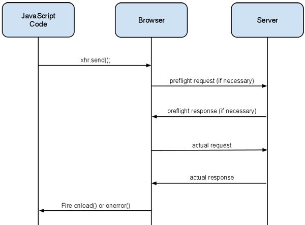

Implementing CORS in Cornice
02 avril 2013🌟
Note
I'm cross-posting on the mozilla services weblog. Since this is the first time we're doing that, I though it could be useful to point you there. Check it out and expect more technical articles there in the future.
For security reasons, it's not possible to do cross-domain requests. In other words, if you have a page served from the domain lolnet.org, it will not be possible for it to get data from notmyidea.org.
Well, it's possible, using tricks and techniques like JSONP, but that doesn't work all the time (see the section below). I remember myself doing some simple proxies on my domain server to be able to query other's API.
Thankfully, there is a nicer way to do this, namely, "Cross Origin Resource-Sharing", or CORS.
You want an icecream? Go ask your dad first.
If you want to use CORS, you need the API you're querying to support it; on the server side.
The HTTP server need to answer to the OPTIONS verb, and with the appropriate response headers.
OPTIONS is sent as what the authors of the spec call a "preflight request"; just before doing a request to the API, the User-Agent (the browser most of the time) asks the permission to the resource, with an OPTIONS call.
The server answers, and tell what is available and what isn't:
- 1a. The User-Agent, rather than doing the call directly, asks the server, the
API, the permission to do the request. It does so with the following headers:
- Access-Control-Request-Headers, contains the headers the User-Agent want to access.
- Access-Control-Request-Method contains the method the User-Agent want to access.
- 1b. The API answers what is authorized:
- Access-Control-Allow-Origin the origin that's accepted. Can be * or the domain name.
- Access-Control-Allow-Methods a list of allowed methods. This can be cached. Note than the request asks permission for one method and the server should return a list of accepted methods.
- Access-Allow-Headers a list of allowed headers, for all of the methods, since this can be cached as well.
- The User-Agent can do the "normal" request.
So, if you want to access the /icecream resource, and do a PUT there, you'll have the following flow:
> OPTIONS /icecream > Access-Control-Request-Methods = PUT > Origin: notmyidea.org < Access-Control-Allow-Origin = notmyidea.org < Access-Control-Allow-Methods = PUT,GET,DELETE 200 OK
You can see that we have an Origin Header in the request, as well as a Access-Control-Request-Methods. We're here asking if we have the right, as notmyidea.org, to do a PUT request on /icecream.
And the server tells us that we can do that, as well as GET and DELETE.
I'll not cover all the details of the CORS specification here, but bear in mind than with CORS, you can control what are the authorized methods, headers, origins, and if the client is allowed to send authentication information or not.
A word about security
CORS is not an answer for every cross-domain call you want to do, because you need to control the service you want to call. For instance, if you want to build a feed reader and access the feeds on different domains, you can be pretty much sure that the servers will not implement CORS, so you'll need to write a proxy yourself, to provide this.
Secondly, if misunderstood, CORS can be insecure, and cause problems. Because the rules apply when a client wants to do a request to a server, you need to be extra careful about who you're authorizing.
An incorrectly secured CORS server can be accessed by a malicious client very easily, bypassing network security. For instance, if you host a server on an intranet that is only available from behind a VPN but accepts every cross-origin call. A bad guy can inject javascript into the browser of a user who has access to your protected server and make calls to your service, which is probably not what you want.
How this is different from JSONP?
You may know the JSONP protocol. JSONP allows cross origin, but for a particular use case, and does have some drawbacks (for instance, it's not possible to do DELETEs or PUTs with JSONP).
JSONP exploits the fact that it is possible to get information from another domain when you are asking for javascript code, using the <script> element.
Exploiting the open policy for <script> elements, some pages use them to retrieve JavaScript code that operates on dynamically generated JSON-formatted data from other origins. This usage pattern is known as JSONP. Requests for JSONP retrieve not JSON, but arbitrary JavaScript code. They are evaluated by the JavaScript interpreter, not parsed by a JSON parser.
Using CORS in Cornice
Okay, things are hopefully clearer about CORS, let's see how we implemented it on the server-side.
Cornice is a toolkit that lets you define resources in python and takes care of the heavy lifting for you, so I wanted it to take care of the CORS support as well.
In Cornice, you define a service like this:
from cornice import Service
foobar = Service(name="foobar", path="/foobar")
# and then you do something with it
@foobar.get()
def get_foobar(request):
# do something with the request.
To add CORS support to this resource, you can go this way, with the cors_origins parameter:
foobar = Service(name='foobar', path='/foobar', cors_origins=('*',))
Ta-da! You have enabled CORS for your service. Be aware that you're authorizing anyone to query your server, that may not be what you want.
Of course, you can specify a list of origins you trust, and you don't need to stick with *, which means "authorize everyone".
Headers
You can define the headers you want to expose for the service:
foobar = Service(name='foobar', path='/foobar', cors_origins=('*',))
@foobar.get(cors_headers=('X-My-Header', 'Content-Type'))
def get_foobars_please(request):
return "some foobar for you"
I've done some testing and it wasn't working on Chrome because I wasn't handling the headers the right way (The missing one was Content-Type, that Chrome was asking for). With my first version of the implementation, I needed the service implementers to explicitely list all the headers that should be exposed. While this improves security, it can be frustrating while developing.
So I introduced an expose_all_headers flag, which is set to True by default, if the service supports CORS.
Cookies / Credentials
By default, the requests you do to your API endpoint don't include the credential information for security reasons. If you really want to do that, you need to enable it using the cors_credentials parameter. You can activate this one on a per-service basis or on a per-method basis.
Caching
When you do a preflight request, the information returned by the server can be cached by the User-Agent so that it's not redone before each actual call.
The caching period is defined by the server, using the Access-Control-Max-Age header. You can configure this timing using the cors_max_age parameter.
Simplifying the API
We have cors_headers, cors_enabled, cors_origins, cors_credentials, cors_max_age, cors_expose_all_headers … a fair number of parameters. If you want to have a specific CORS-policy for your services, that can be a bit tedious to pass these to your services all the time.
I introduced another way to pass the CORS policy, so you can do something like that:
policy = dict(enabled=False,
headers=('X-My-Header', 'Content-Type'),
origins=('*.notmyidea.org'),
credentials=True,
max_age=42)
foobar = Service(name='foobar', path='/foobar', cors_policy=policy)
Comparison with other implementations
I was curious to have a look at other implementations of CORS, in django for instance, and I found a gist about it.
Basically, this adds a middleware that adds the "rights" headers to the answer, depending on the request.
While this approach works, it's not implementing the specification completely. You need to add support for all the resources at once.
We can think about a nice way to implement this specifying a definition of what's supposed to be exposed via CORS and what shouldn't directly in your settings. In my opinion, CORS support should be handled at the service definition level, except for the list of authorized hosts. Otherwise, you don't know exactly what's going on when you look at the definition of the service.
Resources
There are a number of good resources that can be useful to you if you want to either understand how CORS works, or if you want to implement it yourself.
- http://enable-cors.org/ is useful to get started when you don't know anything about CORS.
- There is a W3C wiki page containing information that may be useful about clients, common pitfalls etc: http://www.w3.org/wiki/CORS_Enabled
- HTML5 rocks has a tutorial explaining how to implement CORS, with a nice section about the server-side.
- Be sure to have a look at the clients support-matrix for this feature.
- About security, check out this page
- If you want to have a look at the implementation code, check on github
Of course, the W3C specification is the best resource to rely on. This specification isn't hard to read, so you may want to go through it. Especially the "resource processing model" section